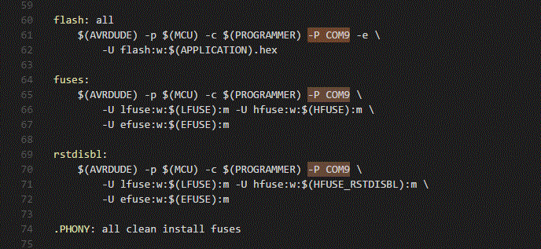
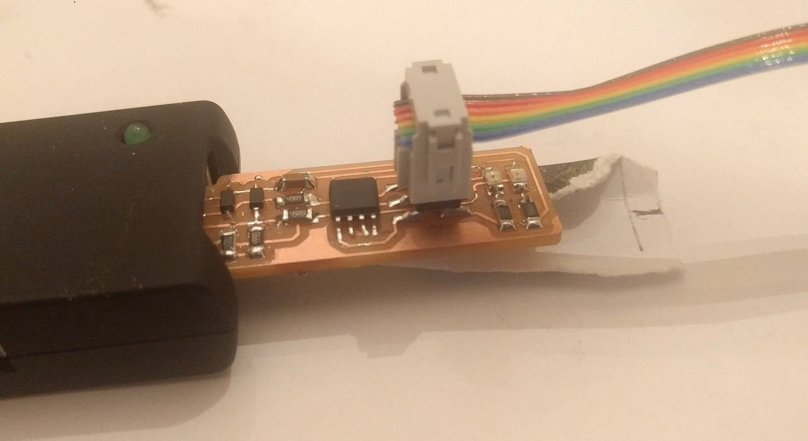
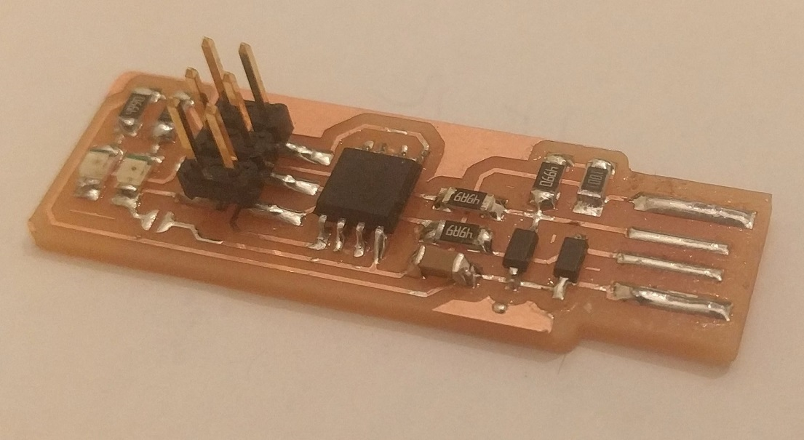

Electronics Production
- Make an in-circuit programmer by milling the PCB
- Optionally, trying other processes
Learning outcomes:
- Describe the process of milling, stuffing, de-bugging and programming
- Demonstrate correct workflows and identify areas for improvement if required
Concrete evidence:
- Shown how to make and programmed the board
- Explained any problems and how they were fixed
- Included a ‘hero shot’ of the board
Some Context
Having the ability to put code onto a microcontroller will be essential for upcoming weeks. Being able to control electronics and their behavior is a critical skill. I have previously dabbled with Arduino for some projects, but these devices make the transition of code from the GUI to the microcontroller as seamless as possible. They must have an integrated way to handle this transition, in both software and hardware interfacing. This week’s assignment is to build our own hardware programmer. I built the USBtiny/ FabTinyISP and used an Arduino as the programmer to get this done.
Preparing to Build
First, we must physically build the board. This required milling the board and then soldering the parts into place. My local instructor mailed me the parts needed to build the ‘Brian’ version of the FabTinyISP. All of the design files are pngs, available for use with Fab Modules. I downloaded these files and then used them to generate toolpaths for the Roland MDX-40a mill. One png file corresponds to cutting the traces of the circuit with a 1/64 inch bit and the other is for the 1/32 inch bit to cutout the board. The next step was to prepare the mill. For this first attempt, I was going to mill some wax to make sure that I do not break an expensive mill bit. I taped down a block of blue wax and was off to the races. I placed a 1/8 inch bit in the mill and calibrated the XY origin by sight. The Z-axis was then calibrated by using the detector system that is an integrated part of the mill. After calibration, I ran the traces toolpath with the installed oversized bit. The results were fine, other than being cut by too large of a mill bit. Next up: try the process with the right size bit.

I removed the 1/8 inch bit and replaced it with the appropriate 1/64 inch bit. Next, I recalibrated the XY position so that the mill would not cut the same part of the wax. (Now I realize a similar adjustment is possible by changing the offset in Fab Modules, but recalibrating seemed faster at the time.) I recalibrated the Z-axis origin with this new bit. It seems clear that since the depth of the bit in the collet cannot be consistent, recalibration of the Z-axis must happen after every bit change. I ran the mill with the traces toolpath again, and it ran fine. The result of the millwork in the wax was exactly as expected. I replaced the 1/64 inch bit with the 1/32 inch bit and recalibrated the Z-axis, again. Everything seemed to be going fine. I uploaded the cutout traces that move around the perimeter of the FabTinyISP and tried to get the mill to begin the cut but there were error messages. The error messages gave me the option to continue or abort the cut. I first aborted the cut, and made sure that everything was fine. It seemed to be, so I proceeded again. This time I allowed the mill to proceed through the errors. I did not expect the result. The mill immediately jumped up to the top of the interior and began ‘cutting’ out the toolpath in the air. I looked up the result, and it appears that I had placed the 1/32 inch bit too high in the collet. I simply moved the bit down a little, recalibrated the Z-axis and everything went fine. Now I was ready. I had seen the whole milling process in wax, and even one of the possible problems that I could face.
Milling the PCB


I placed the 1/64 inch bit into the mill and ran through the process of calibration. Since the FR1 copper clad board was in a new location, all three axes needed to be calibrated. A quick selection of the traces toolpath and I was on my way. A working mill is always impressive. After the traces finished: a quick bit change, calibration and uploading of the cutout toolpath kept things moving. In total, it only took a few minutes to cut out the FabTinyISP board. It came out nicely, but the tool did dive a little into the sacrificial table of the mill. I was able to clean up the milled board a little further with a razor, to cut off the unwanted spare copper near the USB plug. A quick wash in soapy water and rubbing with a brass pad ensured that the board was clean and fee of oxidation for soldering.
Soldering Components onto the Board


SMD soldering was new. Really just very small. Incredibly small. Magnifying glasses and good tweezers are necessary. I stated with the ATtiny. This was the most complicated of the components, but a little guidance from Collin’s Lab helped. Then I moved on to the diodes. These are the smallest, and the hardest to determine their directionality – the line was very faint. The LEDs came next and were the last of the directional components. I then placed all of the resistors, connected the jumper and ended with the ISP pins. The whole process required soldering, a solder-sucker and some solder wick to keep everything neat. The last step was to cover the USB pads with solder, and find a piece of cardstock paper to jam under the board and keep electrical contact while in a plug.
Getting Ready for the Firmware
So, I don’t have a programmer. Instead, I wanted to use an Arduino to program the circuit I had just made. At the time of starting this week’s work, I vaguely remembered seeing an article somewhere online that said an Arduino could program chips. Based on this hunch, I searched how to use an Arduino as an ISP programmer. I found the High-Low Tech wrote about the process, and had more articles about using an Arduino as a programmer in general. These tutorials guided me to the point where I could use an off-the-shelf Arduino to upload a simple ‘blink’ sketch to the ATtiny45. I used Arduino’s example ‘blink’ sketch, modified to work on the ATtiny45’s pin 2, which is the green LED of the device. Seeing this ability to get code onto the ATtiny45 was encouraging. I knew it wasn’t the whole picture, but it represented a significant step toward the week’s goals.
Next, I needed to figure out how to get the firmware onto the device. This is where I wander out of all experience. I had done things that were either similar or peripheral to the work I had completed up to this point. Entering uncharted territory. Exciting and frustrating…
I followed the instructions on the Fab Academy’s FabTinyISP page and, since I am working on a Windows machine, I was directed to a secondary set of instructions. Everything seemed to go well, until I got to the sanity check. Seems fitting. I had lost track on my way through this whole process while trying to use an Arduino as a programmer, and my progress was suspect. I had tried to install drivers from Adafruit before I used Zigdag. I took a second pass at the installation and sanity check of avrdude. Everything worked. Relief.

The firmware was a straightforward download, and make ran well. A hex file was created, and I googled what that was. I have never needed to think about a hex file before but Wikipedia, as always, explained it specifically and effectively.
Programing the ATtiny45
These instructions are conveniently straightforward. However, the instructions are for programming with a traditional programmer. The main action described by the instructions is how to edit the Makefile used to guide the upload of the firmware. However, the instructions do not outline what is needed for the ArduinoISP. Oh good. So, I start Googling. I found this and this set of instructions that hinted at what I needed to do. Neither worked. So tried to upload the firmware via the Arduino IDE, as I had done before with blink, but no luck. I even changed the hex file to a ino file type, but that didn’t work either. In a moment of desperation, I downloaded Atmel Studio 7. But that software seemed like a Thing with a capital ‘T.’ Atmel Studio has these nice training videos, but it still seems like a significant software package to learn. I turned back to the Makefile. Once again, I tried to upload it with make. No luck. I left and went to out to dinner. Sometimes a problem is best solved with fresh eyes. I needed a break before I continued. Tacos. At this point tacos were a logical need.
I came back from dinner, a few hours later, refreshed. Another attempted make upload, but still more errors than success. Therefore, I tried reading though the errors and Makefile. It appeared that the errors were simply an inability to connect over the computer’s COM port. I looked at the Makefile and found that there were three locations where the COM port was referenced, which I had not edited. I changed them all to COM9. It worked. The errors stopped. So I returned to the programming instructions from Fab Academy. Checked the USB functionality on my Device Manager while the FabTinyISP was plugged in – and it showed up as a listed device called ‘USBtinySPI.’ Everything seemed to be working so I blew the fuses and was finished.
Specific Instructions for using an Arduino as a Programmer
So in summary, using the Arduino as a programmer is not too different from what I imagine using a dedicated programmer must be. Within the Makefile, the first avrdude line (line 34) must be changed to:
AVRDUDE = avrdude -c stk500v1 -b19200 -P COM9 -p t45The for using the ArduinoISP, the Makefile programmer must be identified as avrisp.
Additionally, every -P command in the Makefile must identify the correct COM port. For me that was COM9. I had to change lines 61, 65, and 70 to specifically identify the used COM9.
Hero Shots!
 Hello World
My gut tells me that I should find a way to use the FabTinyISP to program a microcontroller to blink an LED. Just as a simple act to say ‘Hello World.’ I have no idea how to do this without the ArduinoISP, but I look forward to the future lesson on the topic.